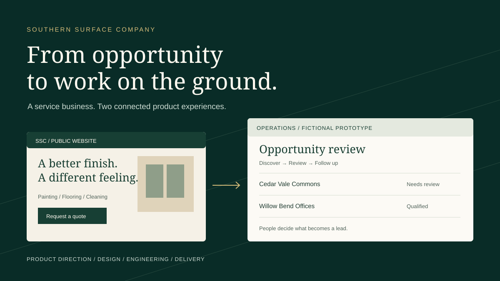

Software behind a service business / Product case study
Southern Surface Company
From opportunity to work on the ground.
I built the customer-facing website and the software behind lead discovery and follow-up for a Nashville service business. The work connects product decisions to something tangible: finding opportunities and helping turn them into customer jobs.
*Owner-reported on October 22, 2026. “Last month” is the owner's reporting window; exact dates and attribution have not been independently audited. These counts do not establish a conversion rate. Read the evidence boundary.

Original product illustration. The operations preview uses fictional records; the live public website is shown below.
The problem
A good crew still needs the next opportunity.
Southern Surface provides painting, flooring, and cleaning for residential and commercial properties in Nashville and Middle Tennessee. A public website helps people understand the work and ask for a quote. Consistent commercial opportunities require another workflow: finding relevant projects and businesses, checking their fit, and following up.
I built software to support both sides. Discovery can collect potential opportunities in the background. A person still decides which ones deserve attention and does the relationship work.
My role
From the customer journey to daily operations.
My contribution spans product direction, requirements, interface design, architecture, implementation, testing, and delivery of the website and lead-management software. This case study describes the work I built; it does not assign the company's sales conversations or service delivery to the software.
Product scope
Service discovery · Quote requests · Lead discovery · Human review · Follow-up
Live public business website · Private operations application · Isolated public prototype
Implementation and history reviewed October 22, 2026. Source inspection establishes supported behavior; it does not establish that every current local change has reached production.
The public website
Help a customer take a useful first step.
The public experience introduces the business through finished spaces, then gives visitors a direct route from a service to a quote request. I kept the commercial and residential journeys together while asking for enough project context to make the next conversation useful.
Painting, flooring, and cleaning have their own service pages. The portfolio provides visual context; the FAQ helps answer practical questions before a request.
Describe the project.
The quote form asks for the service, property type, project city, and a short description alongside contact details. A general-question option uses the same entry point.
Leave room for a conversation.
A request becomes an unverified website inquiry for review. It is separate from collected commercial candidates. Neither path means a job has been won.
Responsive design, accessibility, and search
The implementation includes responsive layouts, labeled form fields, a skip link, keyboard focus styling, and reduced-motion handling. The public homepage and quote journey were inspected at desktop and mobile widths without submitting a request.
Canonical metadata, structured business information, and sitemap generation help describe the public pages to search engines. These are implementation choices, not a claim about search ranking or a certification of full WCAG conformance.
The prototype follows a simplified version of the private application's discovery, candidate review, and lead-management experience. Its records and activity are invented for this showcase.
A guided starting point
Simulate a discovery run, watch a duplicate opportunity get skipped, approve a candidate, and record a manual follow-up. Reset whenever you want to start again.
Interactive prototype — fictional data. No connection to Southern Surface Company's production systems.
A separate outcome guide explains how a discovered opportunity can move through human review, contact, an estimate, and a completed job. That sequence is illustrative; it is not a reconstruction of any customer's history.
How it fits together
Two ways in. A person at the decision point.
Public website → inquiryService pages and a validated quote form create an unverified first-party inquiry for review.
Scheduled discovery → candidatesConfigured sources are collected, normalized, validated, and checked for duplicate opportunities. Optional enrichment is bounded. Candidate records and run progress are persisted.
Human review → approved leadA reviewer evaluates fit and approves or rejects a candidate. Approval creates a verified lead and applies lead scoring.
Lead management → human follow-throughA person records outreach, follow-ups, estimates, and status changes. Copying a draft does not send it.
This diagram abstracts private infrastructure. The public prototype is a separate static page with its own fictional state and no access to any of these services.
Product and architecture decisions
The choices that make automation useful.
Documented decisions are identified below. Where the code demonstrates a behavior but does not establish its historical rationale, I label the interpretation.
01
Documented decision
Discovery should build a review queue.
Collectors create candidates. Approval is a separate action that creates a verified lead. Earlier curated imports could create verified leads directly; unreviewed discoveries instead get a separate candidate lifecycle.
Why. Collection is evidence of a potential opportunity, not confirmation that it is a useful sales lead.
The tradeoff. Review takes a person's time. The result is an explicit boundary before a candidate joins the working pipeline.
02
Current implementation; rationale inferred
Keep distinct opportunities, even at the same company.
Opportunity fingerprints use the source and its record identity, with a normalized fallback. Repeated appearances of one opportunity can be skipped without collapsing every opportunity from the same business.
My interpretation. A company can have more than one project worth reviewing. Treating the company name as the whole identity would lose that distinction.
The tradeoff. Source identifiers and fallback normalization need care. Deduplication reduces repeats; it cannot prove that every remaining opportunity is unique across every source.
03
Documented reliability design
Track progress durably between discovery runs.
Run leases, source checkpoints, and persisted run metadata make discovery resumable and prevent overlapping work. This supports bounded scheduled processing instead of assuming one long run will finish everything.
Why. Source collection can be slow or interrupted. Progress needs to survive the request that performed the work.
The tradeoff. More state has to be managed, and one scheduled invocation may only complete part of the available work. Local tests support these mechanisms; they do not prove uninterrupted production scheduling.
04
Documented decision
Assist outreach and keep a person in control.
The application supports prepared outreach text and recorded activity. Sending remains manual. A follow-up records a next action; it is not an unattended message campaign.
Why. Relevance and the decision to contact someone remain human responsibilities.
The tradeoff. Discovery can be automated, but relationship building and accurate activity records still require work. The system does not close that loop on its own.
05
Current implementation; rationale inferred
Enrichment should not block an otherwise valid candidate.
Duplicate checks happen before optional, bounded contact enrichment. The pipeline revalidates before persisting a candidate, and enrichment failure can leave the candidate available without the extra information.
My interpretation. This limits repeated work and preserves a reviewable opportunity when a secondary lookup fails.
The tradeoff. Some records need more manual research. Successful collection does not guarantee a usable contact or permission to reach out.
06
Documented security boundary
Public discovery and private operations need different access.
The real website accepts validated inquiries. Operational review and management require authenticated, authorized access. The portfolio demonstration is independently implemented with static assets and in-memory fictional data.
Why. A prospective customer, a business operator, and a portfolio visitor have different tasks and permissions.
The tradeoff. The public prototype explains a simplified experience. It cannot offer live discovery, messaging, or customer records.
Challenges and iterations
A discovery button is not proof of reliable automation.
An earlier scheduled collector repeatedly returned the same small set of static businesses. The documented correction introduced dynamic public-source collection while keeping candidate deduplication and review. That made source freshness and changing source schemas part of the operating problem.
A later reliability decision addressed rolling schedule windows, stale workers, and interrupted runs with fixed windows, fenced leases, bounded retries, and durable progress. A clean run with no new candidates can still be healthy; known opportunities and an empty source are different from a failed collection.
The current design records progress and distinguishes an approved lead from a discovered candidate. I present these as implementation and local validation evidence. I have not inspected production run history or verified the deployment state of every recent correction.
Engineering depth
Useful data, protected workflows, and recovery.
The private application uses Next.js, React, and TypeScript, with PostgreSQL persistence through Prisma. Its source includes server-side validation, authenticated administrative workflows, scheduled collection, operational activity tracking, and tests around those boundaries.
Data quality: source-specific qualification, normalization, validation, opportunity fingerprints, and human review.
Reliability: run leases, bounded work, persistent checkpoints, and run summaries.
Application checks: Vitest unit tests and Playwright browser tests exist in the operational repository. They were inspected, not rerun against production.
Delivery: the source contains a Vercel deployment setup and scheduled-job configuration. No deployment or operational settings were changed for this case study.
Public prototype: plain HTML, CSS, and JavaScript modules, with Node's built-in test runner. No package installation or build step.
I have not published a source-line total or coverage percentage for SSC. A saved report without a reproducible scope and current execution would make a weak comparison with the other projects.
Real-world business impact
150 new leads. Five jobs secured.
For the period described as “last month,” Southern Surface's owner reports that the system generated 150 new leads and helped secure 5 jobs. Reported on October 22, 2026, these outcomes connect the software to actual customer acquisition and contracting work.
The figures come directly from the owner. I have not independently audited the reporting dates, lead definitions, attribution, or job records, and no customer information was accessed for this showcase. I do not assume the five jobs came from the same cohort as the 150 leads.
That distinction matters: a discovered record, an approved lead, a conversation, and a paying customer are different outcomes. This case study makes no conversion-rate, revenue, ROI, or time-saved claim.
Evidence: owner statement supplied October 22, 2026; application source, architecture decisions, tests, and history inspected the same day. Prototype metrics and example jobs are fictional and have no relationship to these reported totals.
Limitations and next steps
Make the next claim easier to verify.
People still review candidates, contact prospects, and record follow-ups. Source quality and available contact information vary. Source inspection cannot establish production uptime or the rollout status of recent work.
The next measurement step I would prioritize is a clearly defined source-to-outcome funnel: a dated reporting window, stable opportunity attribution, approved-lead counts, and explicit evidence for won work. That would support comparisons without confusing discovery volume with sales results.
This static prototype targets WCAG 2.2 AA through keyboard controls, semantic structure, visible focus, responsive layouts, and light/dark themes. Automated and manual checks are documented in the repository; they do not constitute a complete accessibility audit.